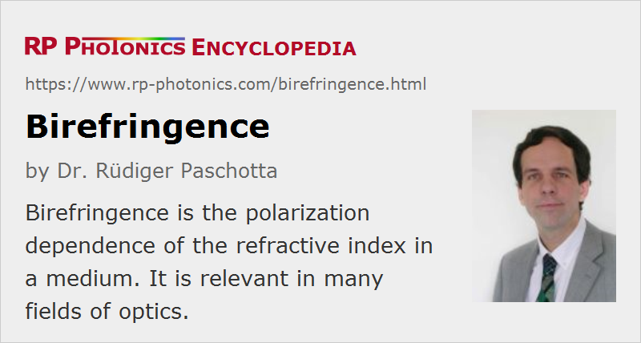

Birefringence
Definition: the polarization dependence of the refractive index of a medium
German: Doppelbrechung
How to cite the article; suggest additional literature
Author: Dr. Rüdiger Paschotta
Birefringence is the property of optically non-isotropic transparent optical materials that the refractive index depends on the polarization direction (direction of the electric field). For example, it is observed for crystalline quartz, calcite, sapphire and ruby, also in nonlinear crystal materials like LiNbO3, LBO and KTP. Figure 1 shows that for α-quartz.
Often, birefringence results from non-cubic structures of optical crystals. In other cases, originally isotropic optical materials (e.g. crystals with cubic structure and glasses) can become anisotropic due to the application of mechanical stress, or sometimes by application of a strong electric field; both can break their original symmetry. In optical fibers, birefringence can result from an elliptical shape of the fiber core, from other asymmetries of the fiber design (particularly for photonic crystal fibers), or from mechanical stress (e.g. caused by bending). In case of polymers (plastics), birefringence can result from the ordering of molecules which is caused by an extrusion processes, for example.
The term birefringence is sometimes also used as a quantity (see below), usually defined as the difference between extraordinary and ordinary refractive index at some optical wavelength.
Uniaxial and Biaxial Optical Materials
Depending on the symmetry of the crystal structure, a crystalline optical material can be uniaxial or biaxial.
The simpler case is that of uniaxial crystals (examples: calcite, quartz, sapphire, LiNbO3). Those have a so-called optical axis, and the refractive index for given wavelength depends on the relative orientation of electric field director and optical axis:
- If the electric field has the direction of the optical axis, one obtains the extraordinary index ne. This is possible only if the propagation direction (more precisely, the direction of the k vector) is perpendicular to the optical axis. For the other polarization direction, one then obtains the ordinary index no.
- For propagation along the optical axis, the electric field can only be perpendicular to that axis, so that one obtains the ordinary index for any polarization direction. In that situation, no birefringence is experienced.
- For an arbitrary angle θ between propagation direction and optical axis, one can find two linear polarization directions exhibiting different refractive indices. The first one is perpendicular to the k vector and the optical axis; here, we have the ordinary index no, and such a wave is called an ordinary wave. The other polarization direction is perpendicular to that and to the k vector. The latter has a refractive index which is generally not the extraordinary index ne, but a rather a mixture of ne and no. This can be calculated with the following equation:
The equation shows that for θ → 0 (i.e., propagation along the optical axis) we obtain n → no, and the observed birefringence vanishes: one obtains no for any polarization direction.
One distinguishes positive and negative uniaxial crystals; in the former case, the extraordinary index is higher than the ordinary index.
For biaxial crystals (examples: mica, CaTiO3 = perovskite, LiB3O5 = LBO, β-BaB2O4 = BBO), such calculations are substantially more complicated, at least for arbitrary propagation directions. There are three mutually orthogonal principal axes associated with different refractive indices. Frequently, however, one deals with cases where the propagation direction is in one of the planes spanned by the principal axes of index ellipsoid, and in such cases the calculation is again reasonably simple. This is usually the case in calculations for phase matching of nonlinear frequency conversion processes.
For optical fibers and other waveguides, the distinction between uniaxial and biaxial does not apply, since the propagation direction is essentially determined by the waveguide.
Consequences of a Polarization-dependent Refractive Index
The polarization dependence of the refractive index can have a variety of effects, some of which are highly important in nonlinear optics and laser technology:
- When a beam is refracted at the surface of a birefringent crystal, the refraction angle depends on the polarization direction. An unpolarized light beam can then be split into two linearly polarized beams when hitting surfaces of the material with non-normal incidence (double refraction). When some object, which is illuminated with unpolarized light, is viewed through a birefringent crystal (e.g. made of calcite), two images occur which are slightly displaced.
- If a linearly polarized laser beam propagates through a birefringent medium, there are generally two polarization components with different wavenumbers. Therefore, the polarization state changes during propagation due to the change in relative phase of the two linearly polarized components. This effect can be applied, for example, in birefringent tuners, because it is wavelength-dependent (even if the difference in refractive indices is not wavelength-dependent). It can also be power-dependent (→ nonlinear polarization rotation) through self- and cross-phase modulation, e.g. in an optical fiber, and this effect is sometimes used for passive mode locking of fiber lasers.
- Similarly, the polarization state of a laser beam in a laser crystal with thermally induced birefringence is distorted. The kind of distortion depends on the position, since the birefringent axis has a varying (e.g. always radial) orientation. This effect (combined with a polarizing optical element in the laser resonator) is the origin of depolarization loss.
- The birefringence of nonlinear crystal materials allows for birefringent phase matching of nonlinear interactions. Essentially, this means that birefringence compensates the wavelength dependence of the refractive index.
- For extraordinary waves, where the refractive index depends on the angular orientation, there is a spatial walk-off: the direction of power propagation is slightly tilted against that of the k vector.
Examples of Birefringence
In laser technology and nonlinear optics, the phenomenon of birefringence occurs mainly in the context of non-isotropic crystals:
- Some laser crystals (e.g. vanadate or tungstate crystals) are naturally birefringent. This is often helpful for obtaining a linearly polarized output without depolarization loss.
- All nonlinear crystals for nonlinear frequency conversion are birefringent.
- Birefringent crystals are also used for making polarizers.
- Although optical fibers are in most cases not birefringent by nature, birefringence is frequently encountered in fiber optics: some birefringence can result from bending (which also causes bend losses) and from random perturbations. Also, there are polarization-maintaining fibers.
Even in a naturally isotropic medium, birefringence can be induced e.g. by inhomogeneous mechanical stress. This can be observed e.g. by placing a piece of acrylic between two crossed polarizers: when stress is applied to the acrylic, one observes colored patterns resulting from the wavelength-dependent effect of stress-induced birefringence. Similar effects occur in bent optical fibers, and also due to thermal effects in laser crystals, which can lead to depolarization loss.
Straight optical fibers usually exhibit only a small degree of random birefringence, which can however scramble the polarization state of guided light over some propagation distance, e.g. 1 m. There are polarization-maintaining fibers, where a strong artificial birefringence can be used for suppressing such effects.
Quantifying Birefringence
The magnitude of birefringence can be specified in different ways:
- For an optical component with some birefringent, one can specify the retardance, which is the difference in phase shifts for the two polarization directions.
- For bulk optical materials, it is also common to consider the difference of refractive indices for the two polarization directions. The larger that difference, the larger the obtained retardance per millimeter of propagation length.
- For optical fibers and other waveguides, it is more appropriate to consider the difference of effective refractive indices. This is directly related to the difference in imaginary values of the propagation constants.
- Alternatively, one may specify the polarization beat length, which is 2π divided by the difference of the propagation constants. If waves with different polarization directions propagate together in the waveguide, their phase relation is restored after integer multiples of the propagation beat length.
Suppliers
The RP Photonics Buyer's Guide contains 25 suppliers for birefringent materials.
Questions and Comments from Users
Here you can submit questions and comments. As far as they get accepted by the author, they will appear above this paragraph together with the author’s answer. The author will decide on acceptance based on certain criteria. Essentially, the issue must be of sufficiently broad interest.
Please do not enter personal data here; we would otherwise delete it soon. (See also our privacy declaration.) If you wish to receive personal feedback or consultancy from the author, please contact him e.g. via e-mail.
By submitting the information, you give your consent to the potential publication of your inputs on our website according to our rules. (If you later retract your consent, we will delete those inputs.) As your inputs are first reviewed by the author, they may be published with some delay.
Bibliography
| [1] | R. Ulrich et al., “Bending-induced birefringence in single-mode fibers”, Opt. Lett. 5 (6), 273 (1980), doi:10.1364/OL.5.000273 |
| [2] | S. J. Garth, “Birefringence in bent single-mode fibers”, IEEE J. Lightwave Technol. 6 (3), 445 (1988), doi:10.1109/50.4022 |
See also: retardance, refraction, polarization of light, polarization beat length, birefringent tuners, birefringent phase matching, polarization-maintaining fibers, spatial walk-off, fiber polarization controllers, Lyot filters, The Photonics Spotlight 2007-05-26
and other articles in the category general optics
|  |
If you like this page, please share the link with your friends and colleagues, e.g. via social media:
These sharing buttons are implemented in a privacy-friendly way!